Captain America: Civil War (2016)
| Movie | Release Date | Poster |
|---|---|---|
| Captain America: Civil War PG-13 · 2h 27m · superhero · science fiction · action Tom Holland's first appearance as Spider-Man. Tony Stark recruits Peter Parker to join his side in the fight at the Leipzig airport. | 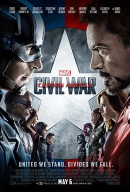 |
| Trailer |
|---|
| Rotten Tomatoes | Metacritic | IMDb |
|---|---|---|
| 90% | 75/100 | View on IMDb |
| Overview |
|---|
Captain America: Civil War is a 2016 American superhero film based on the Marvel Comics character Captain America. Produced by Marvel Studios and distributed by Walt Disney Studios Motion Pictures, it is the sequel to Captain America: The First Avenger (2011) and Captain America: The Winter Soldier (2014), and the 13th film in the Marvel Cinematic Universe (MCU). The film was directed by Anthony and Joe Russo from a screenplay by the writing team of Christopher Markus and Stephen McFeely, and stars Chris Evans as Steve Rogers / Captain America alongside an ensemble cast including Robert Downey Jr., Scarlett Johansson, Sebastian Stan, Anthony Mackie, Don Cheadle, Jeremy Renner, Chadwick Boseman, Paul Bettany, Elizabeth Olsen, Paul Rudd, Emily VanCamp, Marisa Tomei, Tom Holland, Frank Grillo, Martin Freeman, William Hurt, and Daniel Brühl. In Captain America: Civil War, disagreement over international oversight of the Avengers fractures the team into two opposing factions—one led by Steve Rogers and the other by Tony Stark (Downey). Full plot (spoilers)In 1991, the brainwashed super-soldier James "Bucky" Barnes is dispatched from a Hydra base in Siberia to intercept an automobile carrying a case of super-soldier serum. In the present day, approximately one year after Ultron is defeated by the Avengers in the nation of Sokovia, Steve Rogers , Natasha Romanoff , Sam Wilson , and Wanda Maximoff stop Brock Rumlow from stealing a biological weapon from a lab in Lagos . Rumlow blows himself up, attempting to kill Rogers. Maximoff telekinetically diverts the explosion, accidentally destroying a nearby building and killing several Wakandan humanitarian workers in the process. Thaddeus Ross , the U.S. Secretary of State , informs the Avengers that the United Nations (UN) is preparing to pass the Sokovia Accords , which will establish a UN panel to oversee and control the team. The Avengers are divided: Tony Stark supports oversight because of his role in Ultron's creation and Sokovia's devastation, while Rogers has more faith in his own judgment than that of politicians. Meanwhile, Helmut Zemo tracks down and kills Barnes's old Hydra handler, stealing a book containing the trigger words that activate Barnes's brainwashing. At a UN conference in Vienna where the Accords are to be ratified, a bomb kills King T'Chaka of Wakanda. Security footage indicates the bomber is Barnes, whom T'Chaka's son, T'Challa , vows to kill. Informed by Sharon Carter of Barnes's whereabouts and the authorities' intentions to kill him, Rogers decides to try to bring in Barnes—his childhood friend and war comrade—himself. Rogers and Wilson track Barnes to Bucharest and attempt to protect him from T'Challa and the authorities, but all four, including T'Challa, are apprehended by the Bucharest police and James Rhodes . Impersonating a psychiatrist sent to interview Barnes, Zemo recites the words to activate Barnes's brainwashing. He questions Barnes, then sends him on a rampage to cover his own escape. Rogers stops Barnes and sneaks him away. When Barnes regains his senses, he explains that Zemo is the real Vienna bomber and wanted the location of the Siberian Hydra base, where other brainwashed "Winter Soldiers" are kept in cryogenic stasis . Unwilling to wait for authorization to apprehend Zemo, Rogers and Wilson go rogue, and recruit Maximoff, Clint Barton , and Scott Lang to their cause. With Ross's permission, Stark assembles a team composed of Romanoff, T'Challa, Rhodes, Vision , and Peter Parker to capture the renegades. Stark's team intercepts Rogers's group at Leipzig/Halle Airport , where they fight until Romanoff allows Rogers and Barnes to escape. As Rogers and Barnes are escaping, Rhodes is inadvertently shot down by Vision, and becomes partially paralyzed. The rest of Rogers's team is captured and detained at the Raft prison, and Romanoff goes into exile. Stark discovers evidence that Barnes was framed by Zemo and convinces Wilson to give him Rogers's destination. Without informing Ross, Stark goes to the Siberian Hydra facility and strikes a truce with Rogers and Barnes, unaware that they were secretly followed by T'Challa. They find that the other super-soldiers have been killed by Zemo, who then shows them footage that reveals that the automobile Barnes had intercepted in 1991 contained Stark's parents, whom Barnes subsequently killed. Enraged that Rogers kept this from him, Stark turns on them both, leading to an intense fight, in which Stark destroys Barnes's robotic arm, and Rogers disables Stark's armor . Rogers departs with Barnes, leaving his shield behind. Satisfied that he has avenged his family's deaths in Sokovia from the Avengers' actions by successfully fracturing them, Zemo attempts suicide, but he is stopped by T'Challa and taken to the authorities. In the aftermath, Stark provides Rhodes with exoskeletal leg braces that allow him to walk again, while Rogers breaks his allies out of the Raft. In a mid-credits scene , Barnes, granted asylum in Wakanda, chooses to return to cryogenic sleep until a cure for his brainwashing is found. In a post-credits scene , Parker explores the features of the web shooters built for him by Stark. |
| Actor | Character | Photo |
|---|---|---|
| Chris Evans | Steve Rogers / Captain America The leader of a faction of Avengers against regulation; a World War II veteran who was enhanced to the peak of human physicality and frozen in suspended animation, before waking up in the modern world. |  |
| Robert Downey Jr. | Tony Stark / Iron Man The leader of a faction of Avengers in support of regulation; a self-described genius, billionaire, playboy, and philanthropist with electromechanical suits of armor of his own invention. | 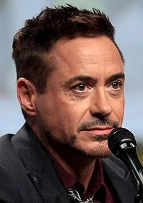 |
| Scarlett Johansson | Natasha Romanoff / Black Widow An Avenger allied with Stark; formerly a highly trained S.H.I.E.L.D. |  |
| Sebastian Stan | Bucky Barnes / Winter Soldier A physically enhanced brainwashed assassin allied with Rogers; his best friend who reemerged after being thought to be killed in action during World War II. | 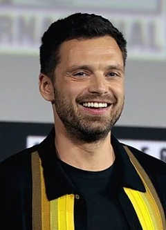 |
| Anthony Mackie | Sam Wilson / Falcon An Avenger allied with Rogers; a former pararescueman trained by the military in aerial combat using a specially designed wing pack. | 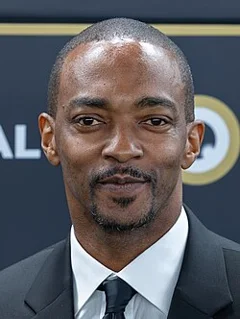 |
| Don Cheadle | James "Rhodey" Rhodes / War Machine A close personal friend of Tony Stark's and an Avenger allied with Stark; an officer in the U.S. | 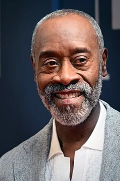 |
| Jeremy Renner | Clint Barton / Hawkeye A master archer allied with Rogers; a retired Avenger and S.H.I.E.L.D. | 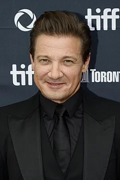 |
| Chadwick Boseman | T'Challa / Black Panther The prince of the African nation of Wakanda allied with Stark who gains enhanced strength by ingesting the Heart-Shaped Herb. | 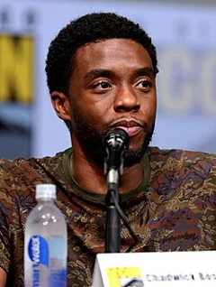 |
| Paul Bettany | Vision An android and Avenger allied with Stark; created using the artificial intelligence J.A.R.V.I.S. | 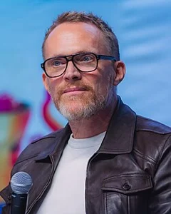 |
| Elizabeth Olsen | Wanda Maximoff An Avenger allied with Rogers; she can engage in hypnosis and telekinesis . | 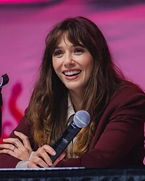 |
| Paul Rudd | Scott Lang / Ant-Man A former electrical engineer turned petty criminal allied with Rogers; he acquired a suit that allows him to shrink or grow in scale while also increasing in strength. |  |
| Emily VanCamp | Sharon Carter A former agent of S.H.I.E.L.D. | 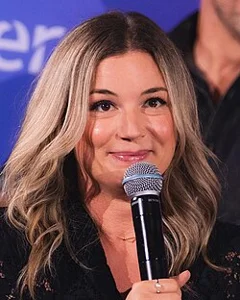 |
| Marisa Tomei | May Parker Peter Parker's aunt. |  |
| Tom Holland | Peter Parker / Spider-Man A teenager allied with Stark; he received spider-like abilities after being bitten by a radioactive spider. |  |
| Frank Grillo | Brock Rumlow Former commander of S.H.I.E.L.D.'s counter-terrorism S.T.R.I.K.E. | 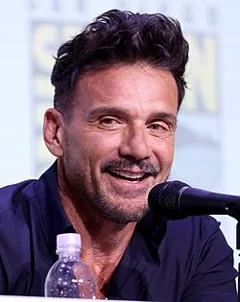 |
| Martin Freeman | Everett K. Ross A member of the CIA's Joint Counter Terrorism Center and a character associated with Black Panther in the comics. | 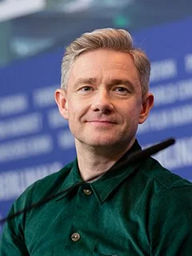 |
| William Hurt | Thaddeus Ross The United States Secretary of State and a former U.S. | 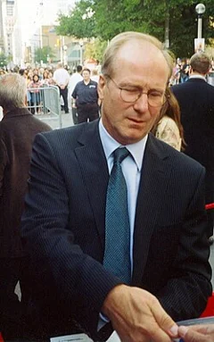 |
| Daniel Brühl | Helmut Zemo A Sokovian colonel -turned-terrorist who is obsessed with defeating the Avengers. | 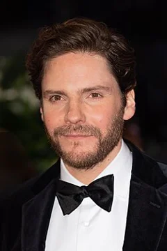 |
| Gwyneth Paltrow | Pepper Potts | No photo |
| Alfre Woodard | Miriam / Miriam | No photo |
| Jim Rash | M.I.T. Liaison | No photo |
| Stan Lee | Watcher Informant / FedEx Driver | No photo |
| John Slattery | Howard Stark / Howard Stark | No photo |
| John Kani | T'Chaka / King T’Chaka | No photo |
| Hope Davis | Maria Stark / Maria Stark | No photo |
| Gene Farber | Vasily Karpov / Karpov | No photo |
| Michael A. Cook | MRI Tech | No photo |
| Laughton Parchment | Vicar | No photo |
| Florence Kasumba | Ayo / Security Chief | No photo |
| Cornell John | Attaché | No photo |
| Sven Hönig | Man at Kiosk | No photo |
| Josh Peck | GSG9 Task Force Gunner | No photo |
| Brent McGee | GSG9 Task Force Pilot | No photo |
| Be Satrazemis | German Innkeeper | No photo |
| Blair Jasin | Raft Guard | No photo |
| Oli Bigalke | Barge Man #1 | No photo |
| Rafael Banasik | Barge Man #2 | No photo |
| David de Vries | Custodian | No photo |
| John Curran | Funeral Director | No photo |
| Katie Amess | Woman in Lobby #1 | No photo |
| Austin Sanders | Woman in Lobby #2 | No photo |
| Brett Gentile | Delivery Truck Driver | No photo |
| Matthew Anderson | Choir | No photo |
| Andrew Botchwey | Choir | No photo |
| Chase Bradfield | Choir | No photo |
| Ernest Charles | Choir | No photo |
| Hendricks Coates | Choir | No photo |
| Ethan Conde | Choir | No photo |
| Shen Dynes | Choir | No photo |
| Nathaniel Ellis | Choir | No photo |
| Jariah Ferguson | Choir | No photo |
| Evan French | Choir | No photo |
| Justin Freeman | Choir | No photo |
| Ralphael Grand'Pierre | Choir | No photo |
| Julian Grimes | Choir | No photo |
| Aaron Hayes | Choir | No photo |
| Austin Hooper | Choir | No photo |
| A. Jones | Choir | No photo |
| Myles Joseph | Choir | No photo |
| Stephen Lewis | Choir | No photo |
| Jacob Ludwick | Choir | No photo |
| Dmahrei McRae | Choir | No photo |
| Ashwin Mudaliar | Choir | No photo |
| Eli Ollinger | Choir | No photo |
| Parker Pape | Choir | No photo |
| Daniel Parada | Choir | No photo |
| Jonah Ruffin | Choir | No photo |
| Darryl Sampson | Choir | No photo |
| Cameron Sardone | Choir | No photo |
| Stanley Sellers | Choir | No photo |
| Miles Selles | Choir | No photo |
| Caden Wilkinson | Choir | No photo |
| Kim Scar | Chinese Newscaster | No photo |
| Jessica Walther-Gabory | German Newscaster #1 | No photo |
| Beniamino Brogi | German Newscaster #2 | No photo |
| Silvina Buchbauer | News Reporter | No photo |
| Henry Amadi | Busboy (Lagos) | No photo |
| Ugochukwu Ani | Waiter (Lagos) | No photo |
| Michael Anthony Rogers | Secretary Ross's Aide | No photo |
| Damion Poitier | Hero Merc #1 | No photo |
| Umar Khan | Hero Merc #2 | No photo |
| David Brown | Hero Merc #3 | No photo |
| Guy Fernandez | Hero Merc #4 | No photo |
| Sophia Russo | Teenage Girl | No photo |
| Joe Russo | Dr. Broussard / Dr. Broussard | No photo |
| Amelia Morck | UN Staffer Gibson / UN Staffer Gibson | No photo |
| Julianna Guill | Stark's Assistant | No photo |
| Surely Alvelo | Nurse | No photo |
| Brian Schaeffer | Cultural Attaché | No photo |
| Kevin LaRosa Jr. | Helicopter Pilots | No photo |
| Al Cerullo | Helicopter Pilots | No photo |
| Jackson Spidell | Josef / Josef / Super Soldier #1 | No photo |
| Yi Long | Super Soldier #2 | No photo |
| Heidi Moneymaker | Super Soldier #3 | No photo |
| Aaron Toney | Super Soldier #4 | No photo |
| Cale Schultz | Super Soldier #5 | No photo |
| Jacob Sung | Choir | No photo |
| Ann Russo | Zemo's Wife / Voice of Zemo's Wife | No photo |
| Kerry Condon | Friday / Voice of Friday | No photo |
| Detail | Value |
|---|---|
| Directed by | Anthony Russo, Joe Russo |
| Written by | Christopher Markus, Stephen McFeely |
| Produced by | Kevin Feige |
| Music by | Henry Jackman |
| Cinematography | Trent Opaloch |
| Edited by | Jeffrey Ford, Matthew Schmidt |
| Production companies | Marvel Studios |
| Distributed by | Walt Disney Studios Motion Pictures, Disney+ |
| Running time | 147 minutes |
| MPAA rating | PG-13 |
| Budget | $250 million |
| Box office | $1.2 billion |
Overview, plot, and cast descriptions are from Wikipedia (CC BY-SA 4.0). Credits, ratings, and box office are from Wikidata.